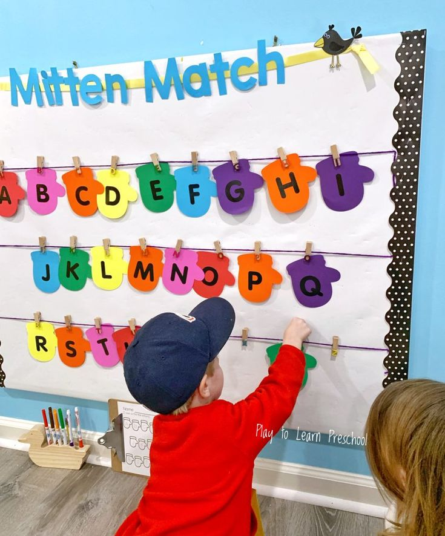

<!DOCTYPE html>
<html lang="en">
<head>
    <meta charset="UTF-8">
    <meta name="viewport" content="width=device-width, initial-scale=1.0">
    <link rel="stylesheet" href="style.css">
    <title>Document</title>
</head>
<body bgcolor="grey">
    
</body>
</html>
<section>
  <B><Marquee behavior="alternate">EDUCATION BACKGROUND</Marquee></B>
  
    <h2>Pre primary</h2>
    <p>
      I began my  educational journey at hope kinderetain. During these one year i learning was instilled into me and i started liking school.
    </p>
    <center></center>
  </section>

  <h2> primary</h2>
  <p>
   i joined fountain gate primary school...where i was there for 8 years.during that time i developed an intrest in football
  </p>
  <center></center>

</section>

  <section>
    <h2>High School</h2>
    <p>
      I attended Teremi highchool, where i continued to excel academically. i was  actively involved in sports, clubs, and community service, showcasing my leadership skills and dedication.
    </p>
  </section>

  <section>
    <h2>College</h2>
    <p>
       I pursued higher education at The Nyeri National Polytechnic . Here, they focused on ICT and engaged in research projects, internships, and collaborative initiatives that enriched my academic experience.
    </p>
  </section>

  <section>
    <h2>University</h2>
    <p>
        currently am in Zetech university where i study BSCIT..hopefully i will be done soon 
        <p ><a href ="https://www.zetech.ac.ke/"> click here !</a></p>
    </p>
  </section>
</main>
